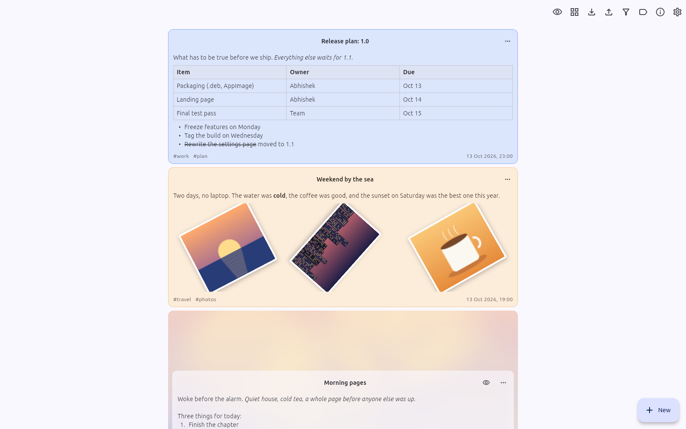
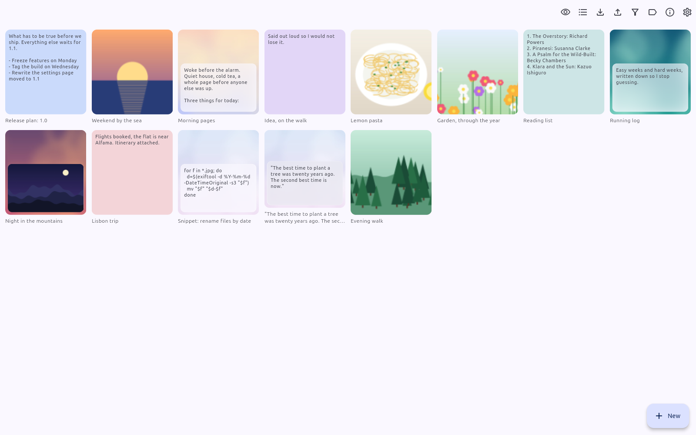
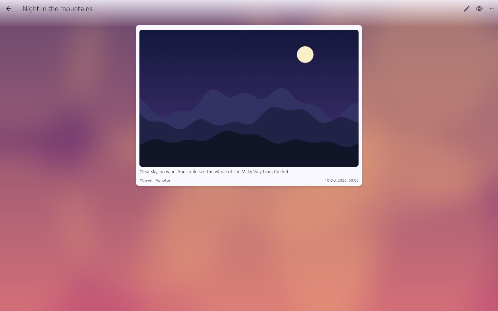
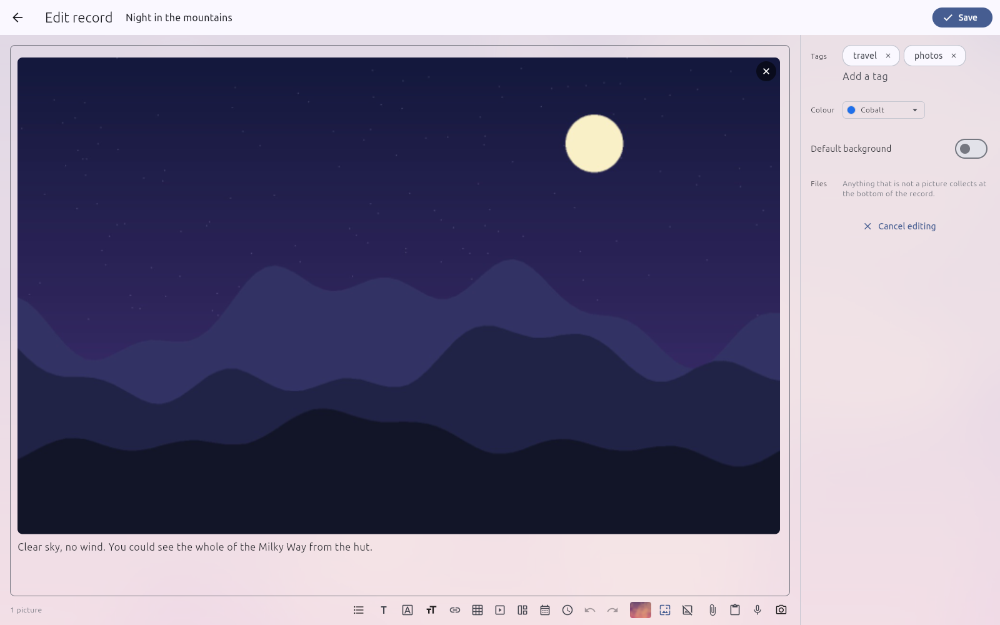
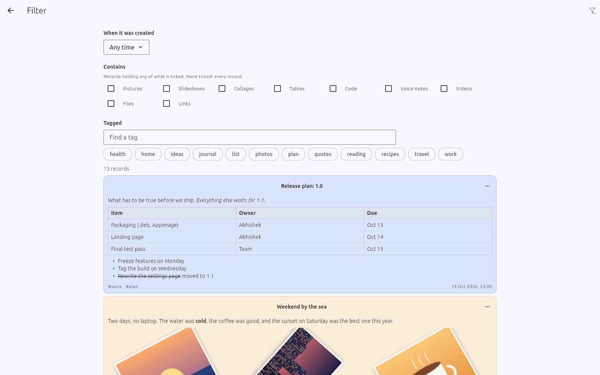
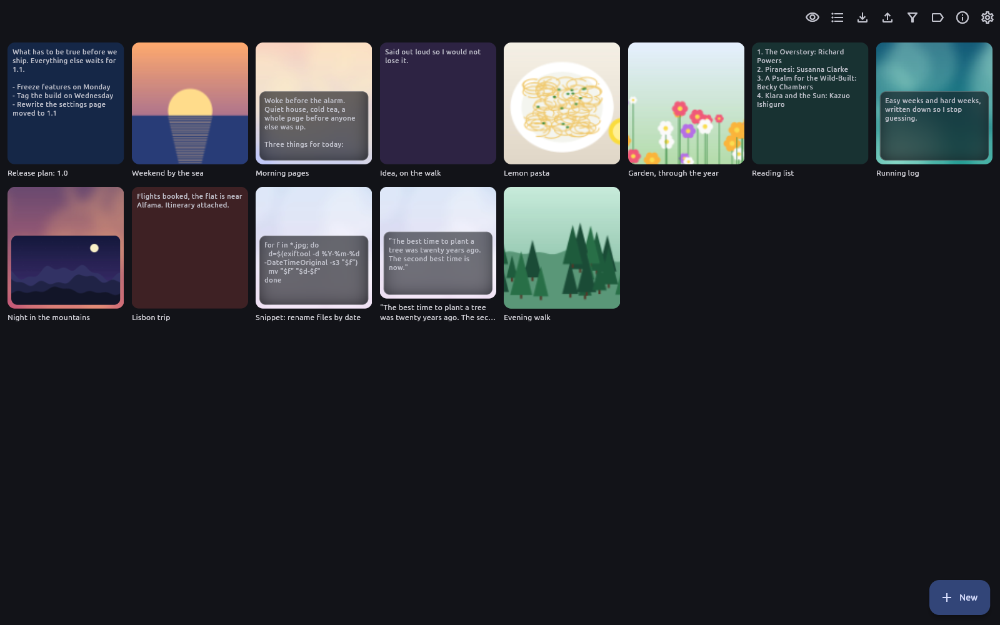
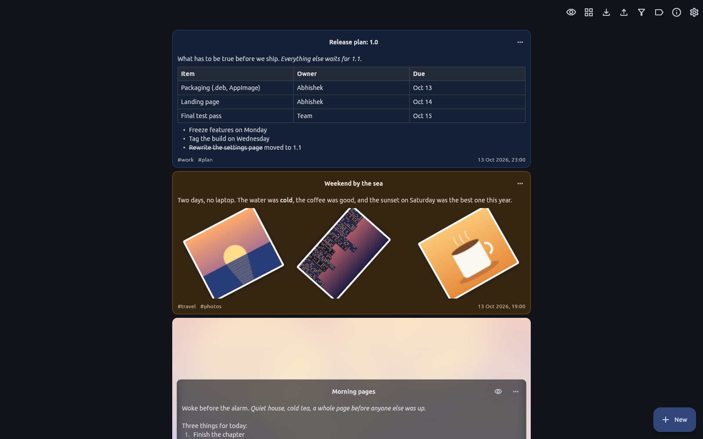

H-Edit is a desktop notebook for everything you want to keep. Write records with text, tables, pictures, collages, voice notes and video. They are saved as plain files in a folder you choose, and you can find any of them again in seconds.
Version 1.0.0 · 64-bit Linux desktop · .deb, AppImage and .tar.gz


No sign-up and no sync to set up. Open the app and start writing.
Write in one box, the way you think. Add a table, pictures, a voice note or a video from the toolbar under it.
Add a title and tags like work or travel, and pick a colour so it stands out on the timeline.
Records run newest first. Filter by date, tag or what they contain, or browse them all as thumbnails.
Everything you need to keep a journal, plan a project or collect a trip's photos.
Bold, italic, underline, strike-through, code, links, lists and indentation, with your choice of font and size.
Drop a table between paragraphs, with a heading row, and add or remove rows and columns as you go.
Show one picture, deal several out like prints on a table, or page through them with an optional timer.
Record from the microphone or the camera right inside a record, and play them back in place.
File records under any words you like, and see them organised by tag as a list or as thumbnails.
Narrow the timeline by when a record was made, what it holds (pictures, tables, code, links…) and its tags.
Pack records and their attachments into a zip, and bring them back in on another computer.
One button hides records from the timeline when someone is looking over your shoulder, and shows them again.

Click any record to open it full-size. Give it a colour from the palette, or a picture that fills the page behind it while the words sit on frosted glass.

Text, tables and pictures share a single writing box, so you can select straight across them. The toolbar adds a table, a slideshow, a collage, a date or a time, a photo from the camera, or a voice note.

Choose a period, tick what a record should hold, pick its tags, and the matching records appear underneath, ready to read.

One button turns the timeline into a grid of thumbnails. Each shows the record's first picture or its opening words, over its own background picture.

Pick a light or dark look, the app font and text size, how wide records are, and which side the buttons sit on.
H-Edit has no account and no cloud. Your records are ordinary files you can see, back up and carry anywhere.
Three ways to get it: install the .deb, run the AppImage as it is, or unpack the .tar.gz for yourself.
Installs for everyone on the computer and pulls in what it needs automatically.
# in the folder you downloaded it to
sudo apt install ./h-edit_1.0.0_amd64.deb
Download .deb
One file, nothing to install. Make it runnable and open it; delete the file to remove it.
chmod +x H-Edit-1.0.0-x86_64.AppImage ./H-Edit-1.0.0-x86_64.AppImageDownload AppImage
Installs just for you, no sudo needed. Remove it any time with ./uninstall.sh.
tar xzf h-edit-1.0.0-linux-x86_64.tar.gz cd h-edit-1.0.0-linux-x86_64 ./install.shDownload .tar.gz
Needs a 64-bit Linux desktop with GTK 3. Voice notes and video use GStreamer, and the AppImage uses FUSE; most desktops already have both. Checksums
Ready-made posters, free to share. Click one for the full size.
Each record is a small file in a folder you choose in Settings under "Where things are kept", with its pictures and attachments beside it. You can move that folder later and H-Edit takes everything with it.
No. H-Edit works entirely on your computer. There is nothing to sign up for and nothing is uploaded.
Back up the folder your records are in, or use Export to pack them into one zip and Import on the other computer.
H-Edit records with GStreamer. On Ubuntu or Debian: sudo apt install gstreamer1.0-tools gstreamer1.0-plugins-good pulseaudio-utils. The .deb suggests these for you.
AppImages need FUSE. On Ubuntu or Debian: sudo apt install fuse3. Or run it without FUSE: ./H-Edit-1.0.0-x86_64.AppImage --appimage-extract-and-run.
No. Uninstalling removes the app only. Your records stay in their folder, and your settings stay in ~/.local/share/h-edit.